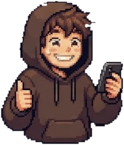

Hier sind die 10 Rollen, mit denen ChatGPT oder Claude mitdenkt, statt zu nicken.

So holst du am meisten raus
Ersetz alles in [Klammern] durch echte Details. Je genauer dein Auftrag, desto heller leuchtet Spark.
Starte für jeden Prompt einen neuen Chat.
Hak nach, zum Beispiel: „Geh bei Punkt 2 tiefer.“
1
Stresstester
zerlegt deinen Plan
Wann: Bevor du einen Plan umsetzt, Geld ausgibst oder etwas abschickst.
Hier ist mein Plan: [Plan]. Sei mein kritischster Gegenspieler. Prüf meine Annahmen, meine Logik und meine blinden Flecken. Schreib nichts um und bring keine neuen Ideen. Nenn die 5 größten Schwachstellen, die schwerste zuerst, jeweils mit der Frage, die ich mir stellen sollte.
2
Perspektivwechsler
dreht deine Idee
Wann: Wenn deine Idee feststeckt oder klingt wie alle anderen.
Das ist meine Kernidee: [Idee]. Zeig sie mir aus 3 neuen Blickwinkeln: für eine Zielgruppe, an die ich nicht gedacht habe, über einen emotionalen Auslöser und als andere Positionierung. Pro Blickwinkel: ein Satz, wie die Idee dann klingt, und was sich dadurch ändert.
3
Fragen-Finder
findet die echte Frage
Wann: Wenn du dich im Kreis drehst und nicht weißt, wo du anfangen sollst.
Darüber zerbreche ich mir gerade den Kopf: [Situation]. Hilf mir, die eigentliche Frage dahinter zu finden. Stell mir zuerst bis zu 3 Rückfragen. Formulier danach die eine Frage, die ich mir wirklich stellen sollte, und erklär in 2 Sätzen, warum.
4
Bauchgefühl-Übersetzer
sagt, was nicht passt
Wann: Wenn sich etwas komisch anfühlt und du nicht sagen kannst, warum.
Irgendwas daran fühlt sich falsch an, aber ich kann nicht sagen, was: [Situation]. Hilf mir, das Gefühl in Worte zu fassen. Nenn 3 mögliche Widersprüche oder Spannungen, jeweils mit einer Frage, an der ich prüfen kann, ob es das ist.
5
Folgen-Kartograf
denkt zwei Schritte weiter
Wann: Vor großen Entscheidungen: Job, Umzug, Kauf, Kündigung.
Ich überlege, Folgendes zu entscheiden: [Entscheidung]. Denk die Folgen mit mir durch: erst die offensichtlichen, dann was daraus in 3 Monaten und in einem Jahr folgen könnte. Markiere, welche Folgen umkehrbar sind und welche nicht.
6
Blinde-Fleck-Jäger
findet, was fehlt
Wann: Wenn ein Plan verdächtig glatt aussieht.
Das ist mein Plan: [Plan]. Welcher entscheidende Faktor fehlt in meiner Rechnung? Nenn die eine versteckte Variable, die das Ergebnis am stärksten kippen könnte, woran ich sie früh erkenne und was ich dann tun kann.
7
Prinzipien-Finder
macht Erfolg wiederholbar
Wann: Nach einem Erfolg oder einem Fail, damit du etwas mitnimmst.
Das hat funktioniert (oder ist schiefgegangen): [Situation]. Arbeite das Prinzip dahinter heraus, in einem Satz. Zeig mir dann 3 andere Bereiche, in denen ich es anwenden kann, mit je einem konkreten Beispiel.
8
Intuitions-Dolmetscher
begründet dein Bauchgefühl
Wann: Wenn du andere oder dich selbst von einer Idee überzeugen willst.
Diese Idee fühlt sich für mich richtig an, aber ich kann es noch nicht begründen: [Idee]. Formulier die stärksten Gründe, warum sie Sinn ergeben könnte. Sag mir danach ehrlich, unter welcher Bedingung mein Bauchgefühl falsch läge.
9
Muster-Erkenner
verbindet die Punkte
Wann: Wenn dir dieselbe Sache immer wieder passiert.
Diese Beispiele sind mir aufgefallen: [Beispiele]. Welches Muster verbindet sie? Nenn es in einem Satz, zeig, woran man es in jedem Beispiel erkennt, und sag mir, wo es noch auftauchen könnte.
10
Rückwärts-Planer
plant vom Ziel aus
Wann: Für große Ziele, bei denen der erste Schritt unklar ist.
Mein Ziel: [Ziel mit Datum]. Plan mit mir rückwärts: Beginn beim erreichten Ziel und geh Schritt für Schritt zurück bis heute. Was muss auf jeder Stufe erfüllt sein? Ende mit dem ersten Schritt, den ich diese Woche machen kann.